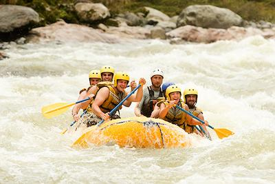
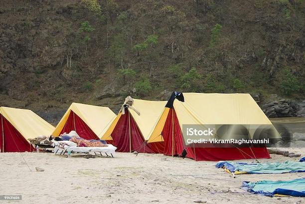
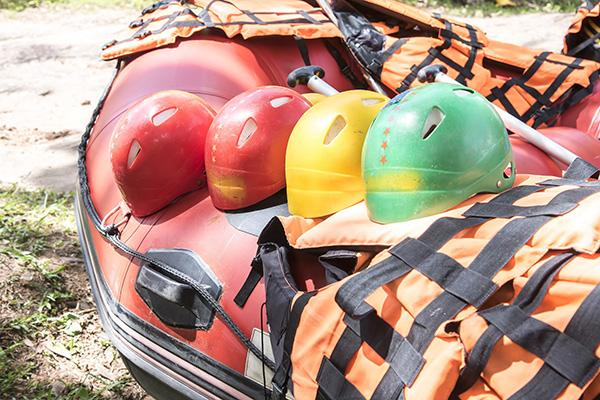

Half-Day
Make a splash with our exciting half-day whitewater rafting trip on the Deschutes River! Perfect for families, first-timers, and adventure seekers short on time, this 3.5-hour journey packs in 13 miles of thrilling Class III and IV rapids, including the famous Boxcar and Oak Springs. Led by our professional guides, you’ll experience just the right mix of adrenaline and fun while taking in the stunning canyon scenery of Central Oregon. half-day trip is the perfect way to add a little adventure to your day on the Deschutes. We require a four-person minimum, but don’t worry—we’ll happily combine smaller groups. Each raft accommodates up to eight adventurers. Minimum age is six years old and at least 45 lbs.


Full-Day
Discover the thrill and beauty of Oregon’s Deschutes River with our full-day whitewater rafting adventure! This all-inclusive trip takes you on an exhilarating 5.5-hour journey through scenic desert canyons and heart-pounding Class III and IV rapids. Between splashes and laughter, enjoy a delicious riverside lunch, swim in calm pools, or explore hidden gems like the White River rock slides and Pirate’s Cove. Our experienced guides handle all the details—equipment, transportation, photos, and food—so you can focus on soaking up the fun and the scenery. Perfect for families, friends, and adventure seekers alike, this full-day rafting package is the ultimate way to experience the excitement, beauty, and spirit of the Deschutes River, up to eight guests per raft. Minimum age is six years old and at least 45 lbs—perfect for adventurous families and friends ready to make unforgettable memories on the Deschutes!



Two Day
Experience the ultimate Deschutes River adventure with our all-inclusive overnight rafting trip! Spend two unforgettable days floating through 40 miles of stunning canyon scenery, conquering exciting Class III rapids, and relaxing at a comfortable riverside camp under a blanket of stars. Our professional guides handle every detail—from navigating the rapids and preparing delicious gourmet meals to sharing the area’s hidden swimming holes and local history. Along the way, you’ll have time to hike, fish, swim, and truly unplug from the outside world. Perfect for families, friends, and anyone craving adventure with a touch of relaxation, this overnight rafting package delivers the perfect blend of excitement and serenity on Oregon’s legendary Deschutes River. kids ages seven and up for two days of adventure, relaxation, and river magic on the Deschutes.



We Provide:
→ Rafts with Paddles
→ Helmets
→ Life jackets
→ Permits
→ Meals (For Full-Day and Two-Day Adventures)
→ Experienced River Guilds
→ Adventure and memory making experiences

Discounts
Group Discount
Build memories with friends and family with our Group Discounts
• Groups of 6 or more: 10% off
• Groups of 12 or more: 20% off
• Groups of 18 or more: 25% off
Youth Discount
• 10% off for youth 17 and under.
Pre-Season
• 25% off when you book your trip during the off season for the up coming rafting season.